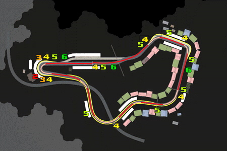
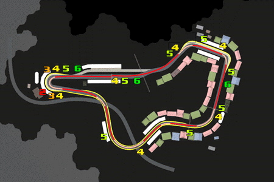
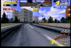
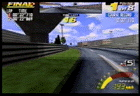

BRICK WALL TOWN
第3戦の攻略法

薄い色の区間＝少しアクセルを抜くところ

薄い色の区間＝少しアクセルを抜くところ
|  | 第１コーナー（右）
スタート直後はすぐ６速まで上げ、連続した小カーブは直線に近いゆるやかな弧を描くようにこなします。連続カーブの最後は左ぎりぎりに寄せるようにします。 |
 |
第２コーナー（右）
アウトいっぱいから早めに４速まで落とし、４５度ぐらいの角度で一気にインへつっこみます。うまくいくと滑りながらきれいな弧を描いてアウトへ抜けていきます。 |
 |
第３コーナー（右）
直線を３分の２ぐらい進んだらまた４速に下げ、一気に右へきります。うまくインの芝に乗れるとアクセルをあまりゆるめずに抜けられますが、少しでも芝から外れそうになったらアクセルを半分くらいまで抜きます。 |
 |
第４コーナー（左）
ミドルから５速のハーフアクセルで、インの芝を踏んでいくように曲がります。 |
 |
第５コーナー（右）
少し早めに４速に落とし、インベタで走ります。 |
|  | 第６コーナー（左）
アウト側から進入するのなら早めに切り始めて滑るようにインをつきます。 |
 |
第７（最終）コーナー（右）
直線を３分の２ぐらい進んだところでブレーキングしながら２速まで段階的に下げ、
大きくハンドルをきりながらハーフアクセルでゆっくり回ります。 |

|

|